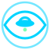

GOD'S EYE
// UAP
UNIDENTIFIED ANOMALOUS PHENOMENA CONSOLE
NORMAL
NVG
FLIR
IRONBOW
CRT
▶ TOUR
GOV FILES
WHAT DID I SEE?
+ LOG SIGHTING
3D MAP
?
UTC
--
SENSOR
EO / NORMAL
MAP
--
CAM
--
ALT
--
TGT
NONE
▶
⟲
0.5×
1×
2×
4×
CHASE CAM
WITNESS VIEW
✕
ACQUIRING GLOBE…